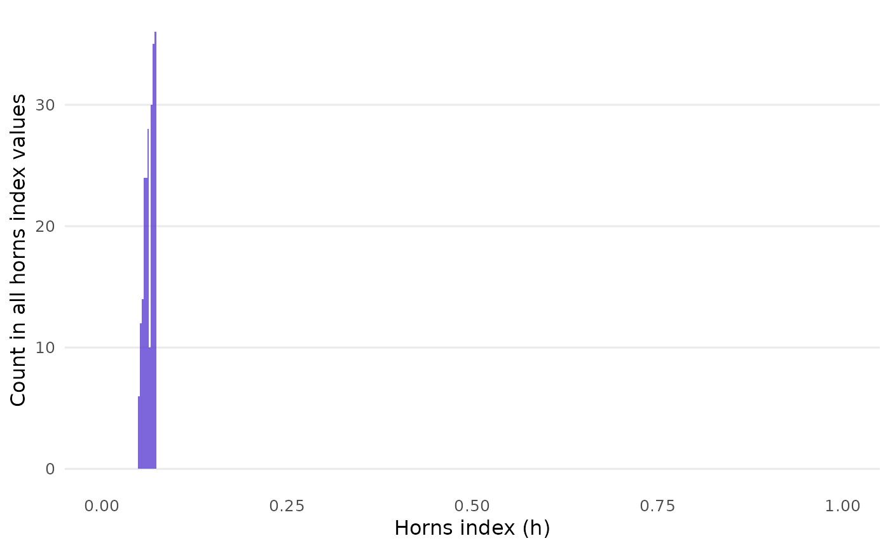

Following up on closure_generate(), you can call
closure_horns_analyze() to compute the horns index for each individual
sample and compute summary statistics on the distribution of these indices.
See horns() for the metric itself.
This adds more detail to the "horns" and "horns_uniform" columns in the
output of closure_generate(), where "horns" is the overall mean of the
per-sample indices found here.
closure_horns_histogram() draws a quick barplot to reveal the
distribution of horns values. The scale is fixed between 0 and 1.
Usage
closure_horns_analyze(data)
closure_horns_histogram(
data,
bar_alpha = 0.8,
bar_color = "#5D3FD3",
bar_binwidth = 0.0025,
text_size = 12
)Arguments
- data
For
closure_horns_analyze(), a list returned byclosure_generate(). Forclosure_horns_histogram(), a list returned byclosure_horns_analyze().- bar_alpha
Numeric (length 1). Opacity of the bars. Default is
0.8.- bar_color
String (length 1). Color of the bars. Default is
"#5D3FD3", a purple color.- bar_binwidth
Width of the bins that divide up the x-axis, passed on to
ggplot2::geom_histogram(). Default is0.0025.- text_size
Numeric. Base font size in pt. Default is
12.
Value
closure_horns_analyze() returns a named list of two tibbles (data
frames):
horns_metrics: Summary statistics of the distribution of horns index values:
mean,uniform: same ashornsandhorns_uniformfromclosure_generate()'s output.sd: double. Standard deviation.cv: double. Coefficient of variation, i.e.,sd / mean.mad: double. Median absolute deviation; seestats::mad().min,median,max: double. Minimum, median, and maximum horns index.range: double. Equal tomax - min.
horns_results:
id: integer. Uniquely identifies each horns index, just like their corresponding samples inclosure_generate().horns: double. Horns index for each individual sample.
closure_horns_histogram() returns a ggplot object.
Details
The "mad" column overrides a default of stats::mad(): adjusting
the result via multiplication by a constant (about 1.48). This assumes a
normal distribution, which generally does not seem to be the case with
horns index values. Here, the constant is set to 1.
Examples
data <- closure_generate(
mean = "2.9",
sd = "0.5",
n = 70,
scale_min = 1,
scale_max = 5
)
data_horns <- closure_horns_analyze(data)
data_horns
#> $closure_generate_inputs
#> # A tibble: 1 × 7
#> mean sd n scale_min scale_max rounding threshold
#> <chr> <chr> <dbl> <dbl> <dbl> <chr> <dbl>
#> 1 2.9 0.5 70 1 5 up_or_down 5
#>
#> $horns_metrics
#> # A tibble: 1 × 9
#> mean uniform sd cv mad min median max range
#> <dbl> <dbl> <dbl> <dbl> <dbl> <dbl> <dbl> <dbl> <dbl>
#> 1 0.0643 0.5 0.00690 0.107 0.00551 0.0511 0.0654 0.0737 0.0227
#>
#> $horns_results
#> # A tibble: 219 × 2
#> id horns
#> <int> <dbl>
#> 1 1 0.0563
#> 2 2 0.0523
#> 3 3 0.0563
#> 4 4 0.0635
#> 5 5 0.0523
#> 6 6 0.0706
#> 7 7 0.0594
#> 8 8 0.0553
#> 9 9 0.0635
#> 10 10 0.0706
#> # ℹ 209 more rows
#>
closure_horns_histogram(data_horns)
